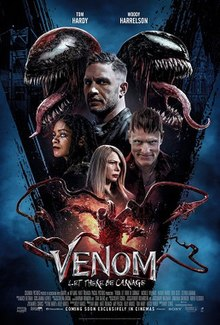
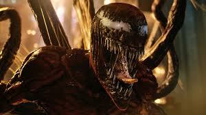

<!DOCTYPE html>
<html>
<head>
<title>最新上映電影</title>
</head>
<body background="黑色.jpg"/>
<div style="height:150px;text-align:center; padding:1em">
<h1 style="color:orange">電影介紹</h1>
<h2 style="color:brown">猛毒2</h2>
<h1 style="color:white">還沒看快去電影院看</h1>
<h1 style="color:red">點擊下面圖片可以傳到電影院線上售票系統</h1>
<a href="https://www.showtimes.com.tw/programs/10509">

</a>
<h1 style="color:red">內有暴雷請斟酌觀看</h1>
<h1 style="color:red">小心</h1>
<h1 style="color:red">小心</h1>
<h1 style="color:red">小心</h1>
<h1 style="color:red">小心</h1>
<iframe width="560" height="315" src="https://www.youtube.com/embed/-Pj26qUBPnM" title="YouTube video player" frameborder="0" allow="accelerometer; autoplay; clipboard-write; encrypted-media; gyroscope; picture-in-picture" allowfullscreen></iframe>
<h2 style="color:white">內容大綱</h2>
<h2 style="color:white">1996年，年輕的克萊圖斯·卡薩迪目睹自己的愛人法蘭西絲·巴瑞森遭到移監，在過程中巴瑞森施展其能夠發出高頻率聲波的異能攻擊護送的警員，年輕的警員派翠克·莫里根情急下開槍擊中巴瑞森右眼並認定其已死亡。巴瑞森隨後被送到了瑞文克勞夫精神病院監禁。

時間來到現在，卡薩迪因為犯下多起殺人案而被監禁，並拒絕與除了艾迪·布洛克以外的人交談，已經成為警探的莫里根請求艾迪幫忙與卡薩迪交談以取得其受害者的埋屍地點，藉由艾迪身上寄宿的共生體猛毒的幫助下，艾迪成功的發現受害者的埋屍地點並聲名大噪，卡薩迪因罪證確鑿而將立即被施以死刑。而艾迪隨後與前未婚妻安妮·威寧見面並得知了其即將與現任男友丹·路易斯結婚，這讓艾迪體內的猛毒相當不滿。

在被行刑前夕，卡薩迪邀請艾迪來做最後的交談，在交談中卡薩迪不停拿艾迪的童年經歷來刺激他，導致猛毒一時激動攻擊卡薩迪，卡薩迪在過程中咬住了艾迪的手，無意間吞下了一小部分共生體。回到家後，猛毒向艾迪抱怨自己自從寄宿在艾迪以來都沒吃壞人的自由，而艾迪則抱怨猛毒壞了他的大好人生，兩人因此發生爭執，猛毒一氣之下脫離艾迪並寄宿在路人身上離開。而在獄中卡薩迪即將被執行注射死刑，然而體內的共生體屠殺忽然覺醒，幫助卡薩迪逃脫，並在殺害多名獄警和典獄長後成功逃獄。卡薩迪與屠殺達成協議，屠殺幫卡薩迪從瑞文克勞夫救出愛人巴瑞森，而卡薩迪會幫助屠殺殺掉其母體猛毒。來到瑞文克勞夫，藉由屠殺的力量卡薩迪成功救出巴瑞森，兩人準備至一間教堂完成他們的「婚禮」。

莫里根因為前面艾迪與卡薩迪的見面而懷疑他，失去了猛毒的艾迪只好請求安妮的幫助，並拜託安妮替她找回猛毒，在此期間，猛毒藉由輾轉附身路人跨越了整個舊金山，安妮找到了猛毒並說服其幫忙，猛毒附身在安妮身上並從警局救出了艾迪。兩人冰釋前嫌後猛毒再度附身在艾迪身上。與此同時，卡薩迪劫持了莫里根而巴瑞森則在找尋艾迪無果後抓走了正要離開的安妮，並要丹傳話給艾迪。兩人隨後前往了教堂完成婚禮，收到丹的消息後艾迪與猛毒也前往教堂與屠殺對戰，巴瑞森用鎖鏈將莫里根勒致昏迷，一番大戰後猛毒不敵屠殺，正當屠殺將要殺死安妮之際，猛毒及時營救出了安妮並將巴瑞森打至地面，巴瑞森在下墜過程中發出高頻率尖叫讓兩人的共生體都脫離，而教堂也因此倒塌，巴瑞森被掉下來的大鐘砸死，而猛毒及時救下艾迪，並吞噬了想與卡薩迪重新結合的屠殺，重傷的卡薩迪臨死前吐露了自己只是想跟艾迪做朋友而已，隨後便被猛毒咬下頭部。艾迪、安妮與丹逃離現場，而仍活著的的莫里根似乎已被共生體感染。艾迪與猛毒向安妮兩人告別，並開始思考下一步。

艾迪與猛毒兩人逃至了某座小島的度假村，在休息期間猛毒向艾迪表示他能展示共生體誕生至今800萬年來的知識，正要展示時房間忽然天搖地動，兩人被轉移至了另一間房間，在那裏他們看到了號角日報的老闆J·喬納·詹姆森正在爆料蜘蛛人的真實身分。
</h2>


</body>
<h2 style="color:white">個人評語</h2>
<h2 style="color:white">我認為這部其實沒有想像中的好看 劇情方面還好 沒有什麼轉折點 不過在電影中的幽默不比第一集來的少 是這部電影最吸引人的地方 電影雖然只有90分鐘 不過卻不輸給其他我所看過的漫威電影 但是還是不太推薦<p>&#128547;</p><p>&#128547;</p></h2>
</body>
</html>
